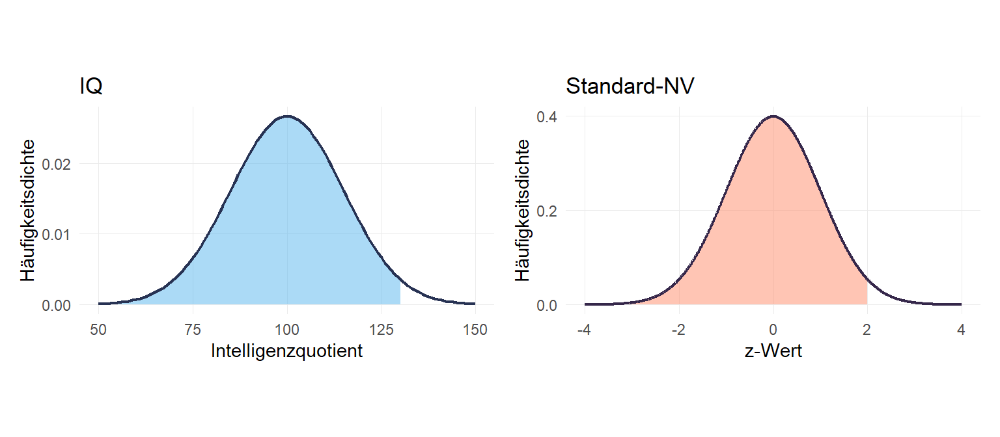
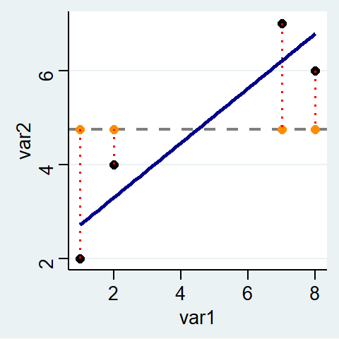

6 Regression
Zum Einstieg betrachten wir zunächst einen (fiktiven) Datensatz mit lediglich 4 Fällen. Mit dem data.frame Befehl können wir einen Datensatz erstellen. Unserer hat zunächst lediglich zwei Variablen: var1 und var2
## var1 var2
## 1 1 2
## 2 2 4
## 3 7 7
## 4 8 6
Wie lassen sich diese Daten beschreiben? Wie können wir einen (möglichen) Zusammenhang zwischen var1 und var2 beschreiben?
Eine Möglichkeit, die wir Sie in Statistik1 kennen gelernt haben, war das arithmetische Mittel. Dieses können wir mit mean zB für var2 berechnen. Diesen Wert fürgen wir als neue Spalte “mean” in den Datensatz df ein. Anschließend können wir das artih. Mittel einzeichnen.
## var1 var2 mean
## 1 1 2 4.75
## 2 2 4 4.75
## 3 7 7 4.75
## 4 8 6 4.75
Müssten wir eine Prognose für die Werte von var2 abgeben, wäre das arith. Mittel eine gute Wahl. Die vorhergesagten Werte werden jeweils auf der Linie für das arith. Mittel liegen.
 Allerdings liegen wir mit dem arith. Mittel dann immer auch Stück daneben. Diese Abweichung zwischen dem tatsächlichen und dem vorhergesagten Wert wird als Residuum bezeichnet, in unserem Beispiel ist das jeweils die Differenz zwischen
Allerdings liegen wir mit dem arith. Mittel dann immer auch Stück daneben. Diese Abweichung zwischen dem tatsächlichen und dem vorhergesagten Wert wird als Residuum bezeichnet, in unserem Beispiel ist das jeweils die Differenz zwischen var2 und mean:
\[Residuum = beobachteter\, Wert \; - \; vorhergesagter\,Wert\]
Als Formel wird das in der Regel wie folgt dargestellt:
\[\epsilon_{\text{i}} = \text{y}_{i} - \hat{\text{y}}_{i}\]
Wir können also die Residuem als Differenz zwischen var2 und mean berechnen und in df ablegen:
## var1 var2 mean m_residuen
## 1 1 2 4.75 -2.75
## 2 2 4 4.75 -0.75
## 3 7 7 4.75 2.25
## 4 8 6 4.75 1.25
Was bedeutet also ein negativer oder ein positiver Wert für das Residuum?
Die horizontale Linie für das arithm. Mittel ist aber sehr deutlich nicht die beste Methode, um die Werte für var2 vorherzusagen. In der Graphik können wir deutlich sehen, dass die Werte “weiter links”, also mit geringeren Werten für var1, auch geringere Werte für var2 aufweisen. Wir könnten also unseren Vorhersagefehler bzw. das Residuum minimieren indem wir die Linie drehen. Die Idee der Regressionsanalyse ist es dabei, die Residuuen zu minimieren. Was würde aber passieren wenn wir die Residuen aus der Mittelwertsvorhersage aufsummieren, um Sie dann zu minimieren?
Mit sum können wir die Summe für eine Variable bilden:
## var1 var2 mean m_residuen
## 1 1 2 4.75 -2.75
## 2 2 4 4.75 -0.75
## 3 7 7 4.75 2.25
## 4 8 6 4.75 1.25## [1] 0## [1] -3.5## [1] 3.5Die Summe der Resiuden auf Basis des arith. Mittels ist immer Null!
Anders formuliert: die gestrichelten Linien nach oben sind in Summe genauso lang wie gestrichelten Linien nach unten.
Die Lösung ist die Residuen zu quadrieren. So ergibt sich eine Kennzahl, die wir minimieren können:
## var1 var2 mean m_residuen
## 1 1 2 4.75 -2.75
## 2 2 4 4.75 -0.75
## 3 7 7 4.75 2.25
## 4 8 6 4.75 1.25## var1 var2 mean m_residuen m_residuen2
## 1 1 2 4.75 -2.75 7.5625
## 2 2 4 4.75 -0.75 0.5625
## 3 7 7 4.75 2.25 5.0625
## 4 8 6 4.75 1.25 1.5625## [1] 14.75Die Minimierung erledigt lm() für uns. Hier geben wir das Merkmal an, das auf der y-Achse liegt (die abhängige Variable) und nach einer ~ das Merkmal für die x-Achse (unabhängige Variable). Die Interpretation des Ergebnisses wird uns die kommenden Wochen beschäftigen. Für heute ist wichtig, dass ein positiver Wert unter var1 bedeutet, dass unsere Gerade von links nach rechts ansteigt und ein negativer eine fallende Linie bedeuten würde. Der Wert unter var1 gibt an, um wieviel sich die Gerade pro “Schritt nach rechts” nach oben/unten verändert. Die Gerade steigt also pro Einheit von var1 um 0.5810811. Die Ergebnisse können wir unter m1 ablegen.
lm(var2~ var1, data = df)
##
## Call:
## lm(formula = var2 ~ var1, data = df)
##
## Coefficients:
## (Intercept) var1
## 2.1351 0.5811
m1 <- lm(var2~ var1, data = df) In unserer Grafik sieht diese Gerade so aus:

In welcher Hinsicht ist die Gerade nun eine Verbesserung gegenüber dem mean? Wir können uns für eine Einschätzung die Residuen ansehen. Für den Punkt ganz links hatte wir vorhin berechnet, dass das Residuum auf Basis des arithm. Mittels (also die Distanz zum orangen Punkt auf der gestrichelten Linie) 2-4.75 = -2.75 beträgt:
## var1 var2 mean m_residuen m_residuen2
## 1 1 2 4.75 -2.75 7.5625
## 2 2 4 4.75 -0.75 0.5625
## 3 7 7 4.75 2.25 5.0625
## 4 8 6 4.75 1.25 1.5625Wie hoch ist nun der vorhergesagte Wert auf Basis der blauen Gerade? Sehen wir uns der Ergebnis aus lm(var2~ var1, data = df), das wir unter m1 nochmal an, hier finden sich unter $fitted.values die vorhergesagten Werte von lm().
## 1 2 3 4
## 2.716216 3.297297 6.202703 6.783784Diese vohergesagten Werte entsprechen einfach der Summe aus dem Wert unter Intercept und dem Wert unter var1 multipliziert mit dem jeweiligen Wert für var1.
##
## Call:
## lm(formula = var2 ~ var1, data = df)
##
## Coefficients:
## (Intercept) var1
## 2.1351 0.5811Für die erste Zeile aus df ergibt sich also m1 folgender vorhergesagter Wert: 2.1351+0.5811*1=2.7162
Die Werte unter fitted.values folgen der Reihenfolge im Datensatz, sodass wir sie einfach als neue Spalte in df ablegen können:
## var1 var2 mean m_residuen m_residuen2 lm_vorhersagen
## 1 1 2 4.75 -2.75 7.5625 2.716216
## 2 2 4 4.75 -0.75 0.5625 3.297297
## 3 7 7 4.75 2.25 5.0625 6.202703
## 4 8 6 4.75 1.25 1.5625 6.783784Die Grafik zeigt wie Vorhersagen auf Basis von m1 aussehen: Sie entsprechen den Werten auf der blauen Geraden (der sog. Regressionsgeraden) an den jeweiligen Stellen für var1.

Wir können erkennen, dass die hellblauen Punkte (also die Vorhersagen von m1) deutlich näher an den tatsächlichen Punkten liegen als die orangen Vorhersagen auf Basis des mean. Trotzdem sind auch die hellblauen Punkte nicht deckungsgleich mit den tatsächlchen Werten. Es gibt also auch hier wieder Residuen. Wir können diese per Hand berechnen als Differenz zwischen dem tatsächlichen und dem vorhergesagten Wert:
## [1] -0.7162162 0.7027027 0.7972973 -0.7837838Oder wir können Sie unter m1$residuals aufrufen:
## 1 2 3 4
## -0.7162162 0.7027027 0.7972973 -0.7837838Auch die Residuen für lm können wir in df ablegen:
## var1 var2 mean m_residuen m_residuen2 lm_vorhersagen lm_residuen
## 1 1 2 4.75 -2.75 7.5625 2.716216 -0.7162162
## 2 2 4 4.75 -0.75 0.5625 3.297297 0.7027027
## 3 7 7 4.75 2.25 5.0625 6.202703 0.7972973
## 4 8 6 4.75 1.25 1.5625 6.783784 -0.7837838Hier sind die Residuen für lm hellblau eingezeichnet:
Wie groß ist die Summe der Residuen für lm?
Um zu beurteilen, um wieviel besser unsere Gerade aus lm() die Werte vorhersagen kann als der mean können wir die Summe der quadrierten Residuen vergleichen:
## var1 var2 mean m_residuen m_residuen2 lm_vorhersagen lm_residuen lm_residuen2
## 1 1 2 4.75 -2.75 7.5625 2.716216 -0.7162162 0.5129657
## 2 2 4 4.75 -0.75 0.5625 3.297297 0.7027027 0.4937911
## 3 7 7 4.75 2.25 5.0625 6.202703 0.7972973 0.6356830
## 4 8 6 4.75 1.25 1.5625 6.783784 -0.7837838 0.6143170## [1] 14.75## [1] 2.256757Zum Beispiel können wir uns fragen, um wieviel sich die Summe der quadrierten Residuen verringert wenn wir statt des mean unser lm-Modell verwenden:
## [1] 12.49324Wenn wir diese Veränderung ins Verhältnis mit dem “Ausgangswert”, also den Residuen aus der Mittelwertregel setzen, dann erhalten wir das \(R^{2}\) für unser lm()-Modell. Dieses gibt die prozentuale Verringerung der Residuen durch das lm()-Modell im Vergleich zur Mittelwertregel an:
## [1] 0.8469995Unser lm-Modell kann also 84,7% der Streuung um den Mittelwert erklären.
6.1 Aufgaben
6.1.1 Aufgabe 1
Erstellen Sie wie folgt einen Beispieldatensatz (Sie können aber gerne auch eigene, andere Werte verwenden)
- Berechnen Sie das arithm. Mittel für
var2! - Legen Sie das arithm. Mittel als neue Variable im Datensatz
df2ab (siehe S.1) - Berechnen Sie die Residuen für die Mittelwertsregel - wie groß ist die Abweichung vom arith. Mittel für die einzelnen Beobachtungen für
var2? - Legen Sie die Residuen der Mittelwertsregel in
df2ab - Wie groß ist die Summe der Resiuden, wenn Sie alle Werte zusammen zählen?
- Erstellen Sie ein Objekt
m2mit einem linearen Regressionsmodell (lm) mitvar2als abhängiger undvar1als unabhängiger Variable! - Betrachten Sie Ergebnisse
m2- was können Sie erkennen? Besteht ein positiver oder negativer Zusammenhang zwischenvar1undvar2? - Erstellen Sie neue Variablen in
df2für die vorhergesagten Werte und die Residuen aus dem Regressionsmodellm2 - Wie hoch ist die Summe der Residuen aus
m2? Wie hoch ist die Summe der quadrierten Residuen fürm2? - Berechnen Sie die Differenz zwischen den quadrierten Residuen der Mittelwertregel und den quadrierten Residuen für
m2. Berechnen Sie das \(R^2\) fürm2!
6.1.2 Aufgabe 2
Dieses Prinzip funktioniert natürlich genauso für größere Datensätze, zum Beispiel den Allbus 2016. Untersuchen Sie den Zusammenhang zwischen Alter (age) und dem Einkommen (inc) der weiblichen, in Vollzeit erwerbstätigen Befragten!
- Lesen Sie den Allbus-Datensatz wie bekannt ein. Hier nochmal zu Erinnerung das Vorgehen:
# Arbeitsverzeichnis in den Ordner mit dem Datensatz setzen:
setwd("C:/Lehre")
a16 <- read.csv("allbus2016.csv", sep = ";", header = T) # einlesenZunächst müssen wir dann die Missings mit NA überschreiben:
Mit na.omit können wir dann all die Beobachtungen auswählen, für age und inc nicht Missing sind:
- Mit folgendem Befehl können Sie ein Teildatenset
a16ferstellen, das nur in Vollzeit erwerbstätige Frauen enthält:
a16f <- a16[a16$sex == 2 & a16$work == 1,] # base R
a16f <- filter(a16, sex == 2, work == 1) # dplyrFür die Analyse sind nur die Variablen age und inc wichtig, also können wir den Datensatz auf diese beiden Variablen reduzieren:
Mit head können wir uns die ersten Zeilen des Datensatzes anzeigen lassen oder mit View() den gesamten Datensatz ansehen:
- Berechnen Sie das arithm. Mittel für das Einkommen
- Legen Sie das arithm. Mittel als neue Variable im Datensatz ab (siehe S.1)
- Berechnen Sie die Residuen für die Mittelwertregel!
- Wie groß ist die Summe der Residuen, wenn Sie alle Werte zusammen zählen?
- Erstellen Sie ein Objekt
m3mit einem linearen Regressionsmodell (lm) mit dem Einkommen (inc) als abhängiger und dem Alter (age) der Frauen als unabhängiger Variable! - Welche Richtung für die Regressionsgerade können Sie erkennen?
- Erstellen Sie neue Variablen in
a16ffür die vorhergesagten Werte und die Residuen aus dem Regressionsmodellm3 - Wie hoch ist die Summe der quadrierten Residuen aus
m3? - Berechnen Sie das \(R^2\) für
m3!